|
|
|
|
NASAPLACE Lackey |
|
|
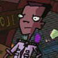 |
Major Appearances:
Battle of the Planets
Quote: "Sorry kid,
since they cut the funding we're not even allowed to look at those
monitors."
Affiliation:
NASAPLACE
See also: NASAPLACE
security, screamer, Mission Director |
|
One of the employees at
NASAPLACE, the lackey blocks Dib's view of the Martian camera feeds,
informing him that NASAPLACE can no longer look at them due to
budget cuts. |
|
NASAPLACE screamer |
|
|
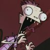 |
Major Appearances:
Battle of the Planets
Quote: "WHOAAA!
It's... ohhhh, ohh! I think it's an asteroid! It's huge! Eeeeuu!
It's headed straight for us!"
Affiliation:
NASAPLACE
See also: NASAPLACE
security, lackey, Mission Director |
|
One of the many NASAPLACE
workers who slaves over computer feeds to make sure all is right in
space, the NASAPLACE screamer spots Mars coming straight for Earth.
He mistakes it for a large asteroid, due to the lack of access to
the Martian camera feeds. |
|
NASAPLACE security |
|
|
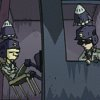 |
Major Appearances:
Battle of the Planets
Quote: "Was that
the, uh.... Crazy UFO kid?"
Affiliation:
NASAPLACE
See also: NASAPLACE
screamer, lackey, Mission Director |
|
Two guards wearing
rocket-shaped helmets sit in a booth outside the NASAPLACE building.
They're supposed to keep out intruders, but they let Dib by as he is
just a 'crazy UFO kid.' When Dib leaves in the monkey ship, the 'L'
in the NASAPLACE sign falls off and nearly hits the security guards. |
|
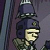
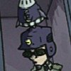 |
|
Neighbors |
|
|
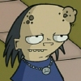 |
Major Appearances:
The Nightmare Begins -- Germs -- Abducted -- Invasion of the Idiot
Dog Brain -- Walk for your Lives -- The Frycook What Came From All
That Space
Quote: "Hey!
Look at that! It's one of them big head boys!"
Affiliation: Neighborhood
See also: Curla,
Truck Drivey |
|
ZIM has several noteworthy
neighbors. Truck Drivey is the man whose house gets invaded by ZIM's
sprouting house tentacles. He watches the abductor ship
disguised as a whale with a tumor headed woman (his wife?). She also
appears when Dib's temporal field is altered. Another neighbor has
no legs. |
|
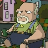
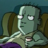 |
|
Nick |
|
|
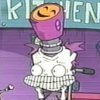 |
Major Appearances:
GIR Goes Crazy and Stuff -- Zim Eats Waffles
Cameos: The
Girl Who Cried Gnome
Quote: "I'm so
happy! All the time! It's great!"
Affiliation:
Skool, experiment
See also: |
|
Zim performs experiments on
this child named Nick (also known as Neural Experiment #231),
keeping him in a containment tube. Zim performs tests on the
happiness centers of Nick's brain and later implants a massive
happiness probe into his head. Nick is wheeled into the kitchen to
eat waffles when Zim decides to build up an immunity to Earth foods.
Nick is also one of the items loaded into the Voot when Zim decides
that they may have to leave Earth due to the Moofy incident. Nick
wears a shirt with the Nickelodeon logo. |
|
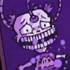 |
|
Nightmare Bitters |
|
|
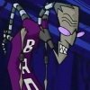 |
Major Appearances:
The Halloween Spectacular of Spooky Doom
Quote: "My revolting
minions! At last the time has come! Today, we'll have a whole new
world to ravage! As soon as we open the portal in Dib's head, the
fun will begin once more!"
Affiliation:
Nightmare World
See also: Nightmare
Monsters |
|
The nightmare version of
Ms. Bitters leads the operation to get to the real world. She
attempts to achieve this by using a device to open up a portal
through Dib's head as his mind is the source of her dimension. When
Zim rescues Dib, she became so enraged that she transforms into a
larger creature. She eventually makes it to the real world but
becomes so horrified by the children and the candy-bloated GIR that
she returns to her dimension. |
|
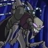 |
|
Nightmare Dib |
|
|
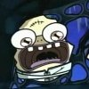 |
Major Appearances:
The Halloween Spectacular of Spooky Doom
Quote: "You're
telling me the prophecy is wrong? 'The boy with the flashing neck
will come. He will be the key to freedom... and stuff.'"
Affiliation:
Nightmare World
See also: Nightmare
Monsters, Nightmare Bitters |
|
The nightmare version of
Dib is big and oafish. He has a lobotomy scar on his forehead and is
kept in a straight jacket. He prefers to stay in the shadows. Dib
talks to him while stuck in the nightmare version of the Crazy House
for Boys. |
|
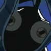 |
|
Nightmare Gaz |
|
|
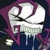 |
Major Appearances:
The Halloween Spectacular of Spooky Doom
Quote: "We're gonna
open your head!"
Affiliation:
Nightmare World
See also: Nightmare
Monsters, Nightmare Bitters, Nightmare Membrane |
|
The nightmare version of
Gaz has no lower jaw and enjoys drinking Dark Juice. She moves by
hopping around on her pointed feet. Her laugh is kind of hillbilly-ish.
Dib encounters her in the nightmare version of his house. |
|
Nightmare Membrane |
|
|
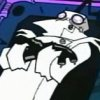 |
Major Appearances:
The Halloween Spectacular of Spooky Doom
Quote: "I'm
floating!"
Affiliation:
Nightmare World
See also: Nightmare
Monsters, Nightmare Bitters, Nightmare Gaz |
|
The nightmare version of
Professor Membrane can materialize from nothingness. He has
extendable eyes on stalks and clawed fingers. His robe can sprout
tentacles to grab attempted escapees. Dib is captured by Nightmare
Membrane when he enters the nightmare version of his home. Nightmare
Membrane takes Dib to Nightmare Bitters, carrying him by his massive
head. |
|
Nightmare White Coats |
|
|
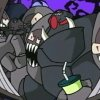 |
Major Appearances:
The Halloween Spectacular of Spooky Doom
Quote: "I like it
when you do those speeches all scary like!"
Affiliation:
Nightmare World
See also: Nightmare
Monsters, Nightmare Bitters, White Coats |
|
In Dib's nightmare world,
the White Coats are big brutish creatures in gray armor that matches
their skin. They like eating and talking spooky. Dib vanishes back
to the real world after the Nightmare White Coats prepare to take
him to Nightmare Bitters. They go to tell her what happened and
presumably get sent to the realm of eternal screaming and
restlessness.
The Nightmare White Coats are nightmare versions of Chuck and Buck,
the real White Coats for the Crazy House for Boys. |
|
Nik |
|
|
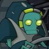 |
Major Appearances:
Planet Jackers
Quote: ""I got a
better idea. We'll take this planet, and you go doom a different
one."
Affiliation:
Space- Planet Jackers
See also: Oog-Ah |
|
The scrawnier of the two
Planet Jackers that abduct Earth, Nik pilots the ship and does most
of the talking. |
|
Noogums' Mom |
|
|
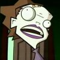 |
Major Appearances:
Plague of Babies
Cameos: Battle
of the Planets
Quote: "What's wrong
with Noogums? He's always so well behaved!"
Affiliation:
Neighborhood
See also: Shnooky |
|
Nhar-Gh'ok soldier Shnooky
lives with a mentally retarded woman under the alias of Noogums. His
'mom' doesn't notice that he doesn't get any older. She has a band
aid on her head and she lets her arms hang down her sides limply. |
|
Nub Bubbins alien |
|
|
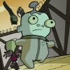 |
Major Appearances:
Hobo 13
Quote: none
Affiliation:
Space- Hobo 13
See also: Nub
Bubbins, Skikkiks, Crystal, Sgt. Hobo 678, Zootch alien |
|
The Nub Bubbins alien is
the smallest squad member on Hobo 13. When the team tries to
make it through a maze guarded by a robot snake creature, Zim tosses
Nub Bubbins to the snake creature in order to save himself. The Nub
Bubbins alien is designed after a skool child named Nub Bubbins, who
can be seen in the stock kids section. Ironically, Nub Bubbins wears a costume
of his alien counterpart in The Halloween Spectacular of Spooky
Doom. |